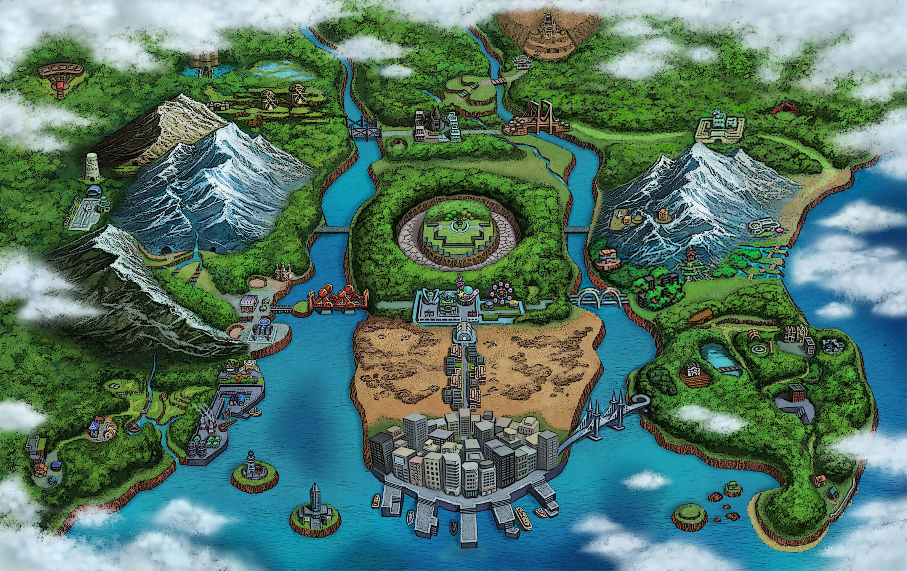

A região de Unova é amplamente considerada uma das mais marcantes de todo o universo Pokémon. Inspirada na vibrante cidade de Nova York, ela se destaca por trazer uma abordagem mais madura e focada na narrativa, com uma atmosfera urbana única e uma conexão profunda entre humanos e Pokémon. Diferente de outras regiões que se inspiram no Japão, Unova trouxe um ar de modernidade, com cidades tecnológicas como Castelia City e um design que explora temas sobre a verdade, ideais e o equilíbrio entre progresso e natureza.